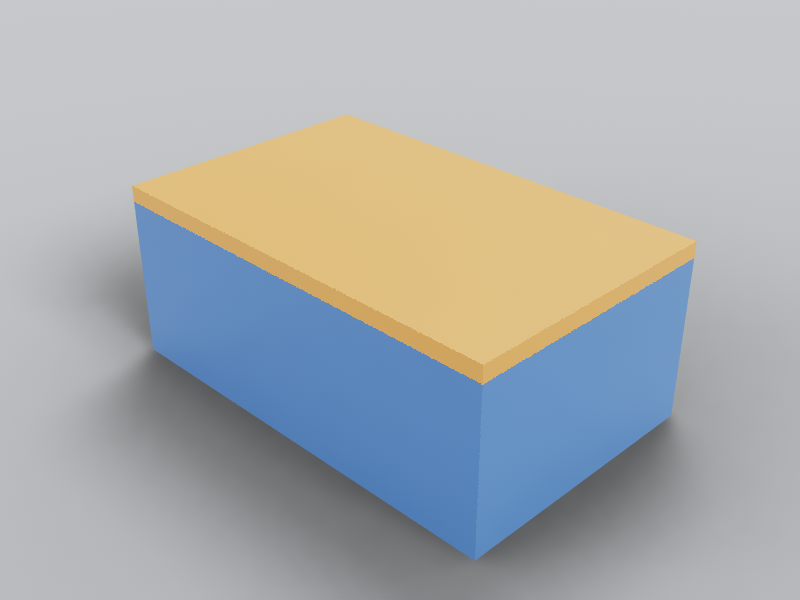

hinge_box
A box with a lid on a hinge along its back edge: a mechanism with one revolute joint, its limits found by `cad model ranges`, and two named poses. Run: cad run examples/hinge_box.ts then pose it in the viewer, or: cad model snapshot <id> open.png --pose open Its `showcase` animation (the lid opening, the lid lifting off and coming back) plays in the viewer and in every GLB it exports: cad model export <id> box.glb

Source
Run it with cad run examples/hinge_box.ts.
// A box with a lid on a hinge along its back edge: a mechanism with one revolute joint, its
// limits found by `cad model ranges`, and two named poses. Run: cad run examples/hinge_box.ts
// then pose it in the viewer, or: cad model snapshot <id> open.png --pose open
// Its `showcase` animation (the lid opening, the lid lifting off and coming back) plays in the
// viewer and in every GLB it exports: cad model export <id> box.glb
import { animation, assembly, box, model, param, revolute } from "@cad/sdk";
export const hingeBox = model("hinge_box", () => {
const w = param("width", 80, { min: 40, max: 160, unit: "mm" });
const d = param("depth", 50, { min: 30, max: 100, unit: "mm" });
const h = param("height", 30, { min: 15, max: 80, unit: "mm" });
const wall = 2;
const tray = box(w, d, h, { align: ["center", "center", "min"] })
.cut(box(w - 2 * wall, d - 2 * wall, h, { align: ["center", "center", "min"] }).translate(0, 0, wall))
.label("tray", { color: "#4a6fa5", material: "abs" });
const lid = box(w, d, 3, { align: ["center", "center", "min"] })
.translate(0, 0, h)
.label("lid", { color: "#c98b4a", material: "abs" });
// The hinge line is the lid's lower back edge; turning about -X lifts the lid's front.
const hinge = revolute("hinge", { parent: tray, child: lid, axis: { origin: [0, d / 2, h], dir: "-X" }, limits: [0, 180] });
const showcase = animation("showcase", 5, { loop: true })
.pose({ 0: "closed", 1.5: "open", 3.5: "open", 5: "closed" })
.translate("lid", [0, 0, 15], { start: 1.5, end: 2.5 })
.translate("lid", [0, 0, -15], { start: 2.5, end: 3.5 });
return assembly("hinge_box", [tray, lid], {
joints: [hinge],
poses: { closed: { hinge: 0 }, ajar: { hinge: 30 }, open: { hinge: 110 } },
animations: [showcase],
});
});
if (import.meta.main) await hingeBox();